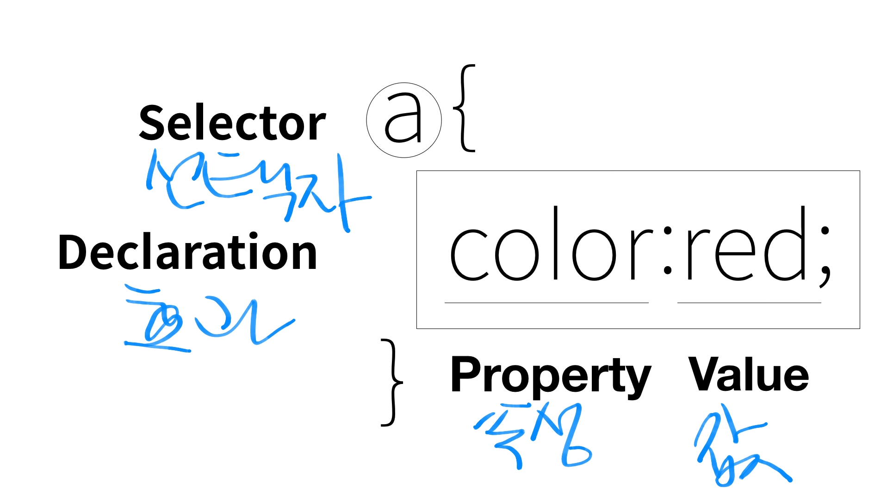

CSS
200426
WEB2 CSS - 1. 수업 소개
시작
200428
< !--
-- >
이건 주석
이 기호 사이에 있는 콘텐츠는 없는 셈 치라는 뜻
웹페이지에 CSS를 넣는 방법은 두가지가 있음
< style >
< /style >
하나는 스타일 태그
이 태그 안쪽에 있는 내용은 CSS라는 뜻
참고로 스타일 태그 안에 a를 적으면 이 웹페이지에 있는 모든 a태그를 뜻함
만약 링크 색을 바꾸고싶다면 중괄호
{
CSS에서 폰트색은 color
}
빨간색으로 바꾸고싶다면
color:red;
만약 링크에 달려있는 데코를 없애고싶다면
중괄호안에
text-decoration: none;
하나는 코드에 직접 스타일속성을 넣는 방법
< a href"" style="color:red" > 이런식으로
만약 링크 하나에만 밑줄을 넣고싶다면
< a href"" style="color:red; text-decoration:underline" >
세미콜론은 각각의 서술을 구분하기 위해서 맨뒤마다 붙이는것
200430
200503

--
폰트 사이즈는 font-size:00px, large, 00%;
폰트 정렬은 text-align: center, left, right;
200504
두가지 코드를 한 그룹으로 묶고싶다면 코드 뒤에 class
내가 본 페이지들의 링크 컬러를 그레이로 하고싶다면
a href="" class="saw"
a href="" class="saw"
.saw {
color:gray;
}
saw앞에 .는
이 웹페이지에 있는 모든 class가 saw인 태그를 가르킨다는 뜻
클래스는 작성된 순서에 따라 중요도가 달라짐
아이디 선택자는 클래스 선택자보다 우선되고
앞에는 #을 붙임
만약 내가
id="active"
#active{
color:red;
}
라고 적는다면
순서에 상관없이 빨간색이 될것
아이디 선택자는 단 한번만 사용할 수 있음
만약 이미 active를 썼다면 다시는 active를 사용하면 안됨
다른 걸로는 아이디 선택자 사용가능
200505
만약 태그에 박스칠을 하려면
태그{
border-width:00px;
border-color:00;
border-style:00;
}
/*
그리고 CSS에서는 이게 주석
*/
h태그처럼 화면 전체를 쓰는 태그를 block level element
a태그처럼 자신의 콘텐츠 크기만을 갖는 태그를 inline element라고 부름
element는 태그랑 똑같은 말
block level을 inline처럼 만들려면
display:inline; 라고 적어주면 됨
그 반대일때엔 display:block;
만약 태그를 화면에서 사라지게 하고싶다면
display:none;
태그 두개를, 컴마를 통해{
동시에 선택하는 것이:가능;
}
태그{
border-width:00px;
border-color:00;
border-style:00;
}
이것도
태그{
broder:00px 00 00;
}
한줄에 쓰는것이 가능
박스칠된 글자와 박스 사이에 간격을 주고싶다면
padding:00px;
박스와 박스사이 간격은 margin으로 조절 가능
만약 간격을 없애고싶다면
margin:0;
만약 블럭태그의 특징을 바꾸고싶다면
width:00px;등으로 조절 가능
WEB2 CSS - 8. 박스 모델
WEB2 CSS - 9. 박스 모델 써먹기
웹 밑, 목록 옆에 선넣는것까지 함
200506
WEB2 CSS - 10. 그리드 소개
div 블록레벨
span 인라인레벨
fr
정해진 숫자만큼의 화면을 쓰도록 자동으로 조정되는 단위
https://caniuse.com/
여러 언어의 기술들이 현재 웹페이지에서 얼마나 쓰이고있는지에 대한 통계사이트
반응형 디자인이란
화면의 크기에 따라 웹페이지의 요소들이 최적화되어 보여지는것
미디어 쿼리란
반응형 디자인을 CSS를 통해 구현하는 핵심적인 개념
반응형 디자인을 하려면 우선 웹페이지의 크기를 알아야함 이건
웹페이지 검사 - Console 를 통해 쉽게 알수있음
screen width < 00px는
'화면의 폭이 00px보다 작을 때'라는 의미로
최대가 00px이라는 @media{max-width:00px}와 의미가 같음
WEB2 CSS - 14. CSS 코드의 재사용
글 오른쪽으로 옮기고 다른페이지에도 적용하고
CSS페이지 하나 만들었음
link rel="stylesheet" href=""
태그가 작성된 위치에서 지정한 CSS파일을 다운하고 그 CSS를 적용하라는 뜻
WEB2 CSS - 15. 수업을 마치며
🎉